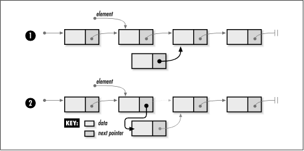
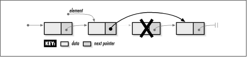

5.3 Implementation and Analysis of
Linked Lists
Recall that each element of a linked list
consists of two parts: a data member and a pointer to the next
element in the list. The structure ListElmt
represents an individual element of a linked list (see Example
5.1). As
you would expect, this structure has two members that
correspond to those just mentioned. The structure
List is the linked list data structure (see Example
5.1). This structure consists of five members:
size is the number of elements in the list,
match is a member not used by linked lists but
by datatypes that will be derived later from linked lists,
destroy is the encapsulated destroy function
passed to list_init, head is a pointer to
the first of the linked elements, and tail is
a pointer to the tail element.
Example 5.1.
Header for the Linked List Abstract Datatype /*****************************************************************************
* *
* -------------------------------- list.h -------------------------------- *
* *
*****************************************************************************/
#ifndef LIST_H
#define LIST_H
#include <stdlib.h>
/*****************************************************************************
* *
* Define a structure for linked list elements. *
* *
*****************************************************************************/
typedef struct ListElmt_ {
void *data;
struct ListElmt_ *next;
} ListElmt;
/*****************************************************************************
* *
* Define a structure for linked lists. *
* *
*****************************************************************************/
typedef struct List_ {
int size;
int (*match)(const void *key1, const void *key2);
void (*destroy)(void *data);
ListElmt *head;
ListElmt *tail;
} List;
/*****************************************************************************
* *
* --------------------------- Public Interface --------------------------- *
* *
*****************************************************************************/
void list_init(List *list, void (*destroy)(void *data));
void list_destroy(List *list);
int list_ins_next(List *list, ListElmt *element, const void *data);
int list_rem_next(List *list, ListElmt *element, void **data);
#define list_size(list) ((list)->size)
#define list_head(list) ((list)->head)
#define list_tail(list) ((list)->tail)
#define list_is_head(list, element) ((element) == (list)->head ? 1 : 0)
#define list_is_tail(element) ((element)->next == NULL ? 1 : 0)
#define list_data(element) ((element)->data)
#define list_next(element) ((element)->next)
#endif
5.3.1 list_init
The list_init operation initializes a
linked list so that it can be used in other operations (see Example
5.2). Initializing a linked list is a simple operation in
which the size member of the list is set to 0,
the destroy member to destroy,
and the head and tail pointers
to NULL.
The runtime complexity of list_init is O (1) because all of the steps in
initializing a linked list run in a constant amount of
time.
5.3.2 list_destroy
The list_destroy operation destroys a
linked list (see Example
5.2). Primarily this means removing all elements from the
list. The function passed as destroy to list_init is called once for each
element as it is removed, provided destroy was
not set to NULL.
The runtime complexity of list_destroy is O (n),
where n is the number of
elements in the list. This is because the O (1) operation list_rem_next must be called once for each
element.
5.3.3 list_ins_next
The list_ins_next operation inserts an
element into a linked list just after a specified element (see
Example
5.2). The call sets the new element to point to the data
passed by the caller. The actual process of inserting the new
element into the list is a simple one, but it does require
some care. There are two cases to consider: insertion at the
head of the list and insertion elsewhere.
Generally, to insert an element into a linked
list, we set the next pointer of the new
element to point to the element it is going to precede, and we
set the next pointer of the element that will
precede the new element to point to the new element (see Figure
5.3). However, when inserting at the head of a list, there
is no element that will precede the new element. Thus, in this
case, we set the next pointer of the new
element to the current head of the list, then reset the head
of the list to point to the new element. Recall from the
interface design in the previous section that passing NULL for
element indicates that the new element should
be inserted at the head. In addition to these tasks, whenever
we insert an element at the tail of the list, we must update
the tail member of
the list data structure to point to the new tail. Last, we
update the size of the list by incrementing its
size member.

The runtime complexity of list_ins_next is O (1) because all of the steps in
inserting an element into a linked list run in a constant
amount of time.
5.3.4 list_rem_next
The list_rem_next operation removes from
a linked list the element just after a specified element (see
Example
5.2). The reasons for removing the element just after, as
opposed to the element itself, are discussed in the questions
and answers at the end of the chapter. As with inserting an
element, this call requires consideration of two cases:
removing an element from the head of the list and removing one
elsewhere.
The actual process of removing the element
from the list is a simple one, but it too requires some care
(see Figure
5.4). Generally, to remove an element from a linked list,
we set the next pointer of the element
preceding the one being removed to point to the element after
the element being removed. However, when removing an element
from the head of a list, there is no element that precedes the
element being removed. Thus, in this case, we set the head of
the list to point to the element after the one being removed.
As with insertion, NULL serves nicely as a sentinel passed in
element to indicate that the element at the
head of the list should be removed. In addition to these
tasks, whenever we remove the element at the tail of the list,
we must update the tail member of the list
data structure to point to the new tail, or to NULL if
removing the element has caused the list to become empty.
Last, we update the size of the list by decreasing the
size member by 1. Upon return,
data points to the data from the element
removed.

The runtime complexity of list_rem_next is O (1)
because all of the steps in removing an element from a linked
list run in a constant amount of time.
5.3.5 list_size, list_head,
list_tail, list_is_tail,list_data, and list_next
These macros
implement some of the simpler linked list operations (see Example
5.1). Generally, they provide an interface for accessing
and testing members of the List and
ListElmt structures.
The runtime complexity of these operations is
O (1) because accessing and
testing members of a structure are simple tasks that run in a
constant amount of time.
Example 5.2.
Implementation of the Linked List Abstract Datatype /*****************************************************************************
* *
* -------------------------------- list.c -------------------------------- *
* *
*****************************************************************************/
#include <stdlib.h>
#include <string.h>
#include "list.h"
/*****************************************************************************
* *
* ------------------------------- list_init ------------------------------ *
* *
*****************************************************************************/
void list_init(List *list, void (*destroy)(void *data)) {
/*****************************************************************************
* *
* Initialize the list. *
* *
*****************************************************************************/
list->size = 0;
list->destroy = destroy;
list->head = NULL;
list->tail = NULL;
return;
}
/*****************************************************************************
* *
* ----------------------------- list_destroy ----------------------------- *
* *
*****************************************************************************/
void list_destroy(List *list) {
void *data;
/*****************************************************************************
* *
* Remove each element. *
* *
*****************************************************************************/
while (list_size(list) > 0) {
if (list_rem_next(list, NULL, (void **)&data) == 0 && list->destroy !=
NULL) {
/***********************************************************************
* *
* Call a user-defined function to free dynamically allocated data. *
* *
***********************************************************************/
list->destroy(data);
}
}
/*****************************************************************************
* *
* No operations are allowed now, but clear the structure as a precaution. *
* *
*****************************************************************************/
memset(list, 0, sizeof(List));
return;
}
/*****************************************************************************
* *
* ----------------------------- list_ins_next ---------------------------- *
* *
*****************************************************************************/
int list_ins_next(List *list, ListElmt *element, const void *data) {
ListElmt *new_element;
/*****************************************************************************
* *
* Allocate storage for the element. *
* *
*****************************************************************************/
if ((new_element = (ListElmt *)malloc(sizeof(ListElmt))) == NULL)
return -1;
/*****************************************************************************
* *
* Insert the element into the list. *
* *
*****************************************************************************/
new_element->data = (void *)data;
if (element == NULL) {
/**************************************************************************
* *
* Handle insertion at the head of the list. *
* *
**************************************************************************/
if (list_size(list) == 0)
list->tail = new_element;
new_element->next = list->head;
list->head = new_element;
}
else {
/**************************************************************************
* *
* Handle insertion somewhere other than at the head. *
* *
**************************************************************************/
if (element->next == NULL)
list->tail = new_element;
new_element->next = element->next;
element->next = new_element;
}
/*****************************************************************************
* *
* Adjust the size of the list to account for the inserted element. *
* *
*****************************************************************************/
list->size++;
return 0;
}
/*****************************************************************************
* *
* ----------------------------- list_rem_next ---------------------------- *
* *
*****************************************************************************/
int list_rem_next(List *list, ListElmt *element, void **data) {
ListElmt *old_element;
/*****************************************************************************
* *
* Do not allow removal from an empty list. *
* *
*****************************************************************************/
if (list_size(list) == 0)
return -1;
/*****************************************************************************
* *
* Remove the element from the list. *
* *
*****************************************************************************/
if (element == NULL) {
/**************************************************************************
* *
* Handle removal from the head of the list. *
* *
**************************************************************************/
*data = list->head->data;
old_element = list->head;
list->head = list->head->next;
if (list_size(list) == 1)
list->tail = NULL;
}
else {
/**************************************************************************
* *
* Handle removal from somewhere other than the head. *
* *
**************************************************************************/
if (element->next == NULL)
return -1;
*data = element->next->data;
old_element = element->next;
element->next = element->next->next;
if (element->next == NULL)
list->tail = element;
}
/*****************************************************************************
* *
* Free the storage allocated by the abstract datatype. *
* *
*****************************************************************************/
free(old_element);
/*****************************************************************************
* *
* Adjust the size of the list to account for the removed element. *
* *
*****************************************************************************/
list->size--;
return 0;
}
|